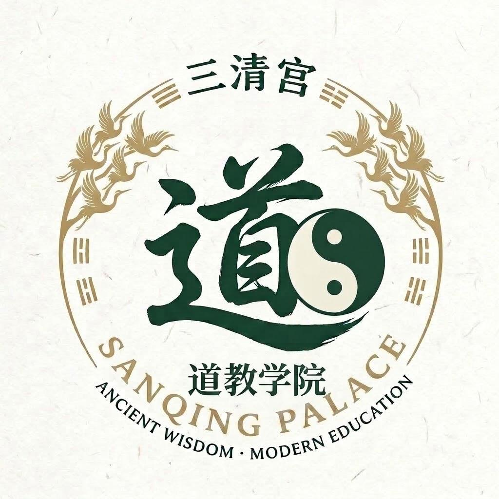
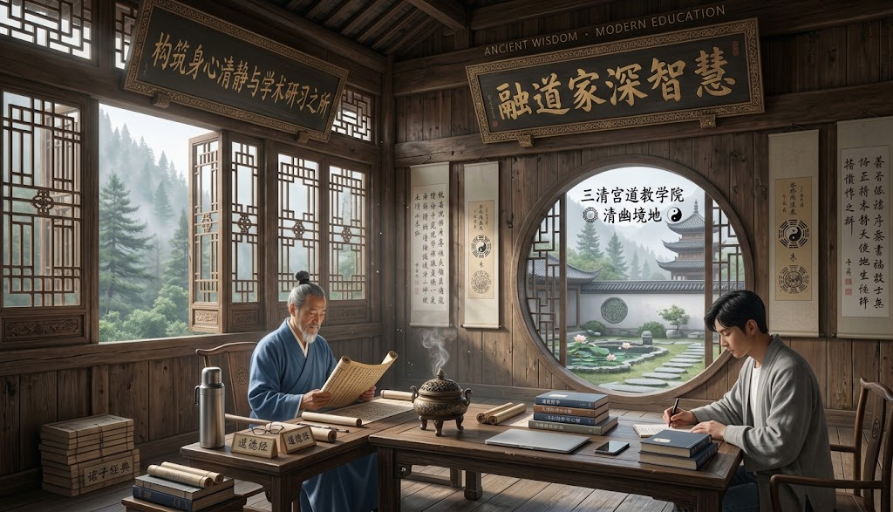

各位學子與同修：
因應季節更替與日照時間變化，為順應自然之道、調和陰陽，本院決定自下週一起更新秋季作息安排。
晨鐘時間將調整為清晨 5:30，早課時間相應順延。夜間止靜時間提前至晚間 21:30。請各位修學生留意各佈告欄的最新作息表，並依此調整個人起居，切實踐行「日出而作，日入而息」的養生法則。

返回學院首頁
各位學子與同修：
因應季節更替與日照時間變化，為順應自然之道、調和陰陽，本院決定自下週一起更新秋季作息安排。
晨鐘時間將調整為清晨 5:30，早課時間相應順延。夜間止靜時間提前至晚間 21:30。請各位修學生留意各佈告欄的最新作息表，並依此調整個人起居，切實踐行「日出而作，日入而息」的養生法則。